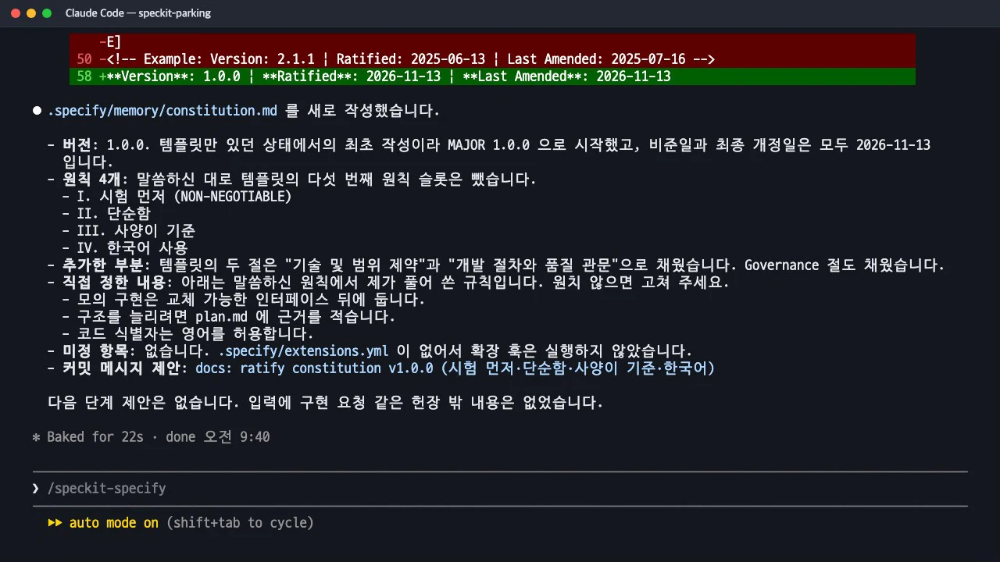

모든 기능이 지켜야 할 원칙을
constitution.md한 장에 적습니다. 원칙은 계획 단계의 헌법 점검, 일관성 분석, 수렴 단계에서 가장 중요한 기준으로 다시 쓰입니다.
무엇을 · 왜#
헌법(constitution)은 기능 하나가 아니라 프로젝트 전체에 적용되는 규칙입니다. 사양마다 "시험은 먼저 쓴다", "외부 연동은 모의로 둔다"를 되풀이하는 대신 한 곳에 두고, 이후 단계에서 이 문서를 읽고 따릅니다.
| 다시 쓰이는 곳 | 어떻게 |
|---|---|
/speckit-plan |
plan.md의 「Constitution Check」 표에서 원칙마다 통과 여부를 적습니다. 설계 전과 후, 두 번 확인합니다 |
/speckit-tasks |
「시험 먼저」 원칙이 있으면 시험 작업을 필수로 넣습니다(원칙이 없으면 시험 작업은 선택) |
/speckit-analyze |
헌법의 MUST를 어기면 심각도 CRITICAL로 보고합니다 |
/speckit-converge |
코드가 MUST 원칙을 어기면 가장 먼저 고칠 작업으로 덧붙입니다 |
따라 하기#
- 원칙을 말로 적어 넘깁니다. 이 실습에서는 원칙 네 개를 제시했습니다.
/speckit-constitution 전국 주차장 검색·예약 서비스의 원칙을 정해 줘. 1) 시험 먼저: 인수 시나리오(Given/When/Then)마다 자동 시험을 먼저 쓰고 실패를 확인한 뒤 구현한다. 2) 단순함: 백엔드 서비스 하나와 웹 화면 하나로 시작하고, 결제 같은 외부 연동은 모의로 둔다. 3) 사양이 기준: spec.md 에 없는 기능은 만들지 않는다. 4) 문서와 화면 문구는 한국어로 쓴다. - 결과를 읽고 풀어 쓴 규칙을 확인합니다. 22초 만에
.specify/memory/constitution.md가 채워졌습니다. Claude는 "말씀하신 원칙에서 제가 풀어 쓴 규칙"으로 세 가지를 따로 알려 주었습니다. 모의 구현은 교체 가능한 인터페이스 뒤에 둔다, 구조를 늘리려면 plan.md에 근거를 적는다, 코드 식별자는 영어를 허용한다. 원치 않으면 이때 고치라고 합니다.
헌법을 쓴 뒤의 요약: 버전 1.0.0, 원칙 네 개, 풀어 쓴 규칙
산출물: constitution.md#
틀의 빈칸([PRINCIPLE_1_NAME] 등)이 원칙 네 개로 채워지고, 원칙마다 MUST·MUST NOT와 근거가 붙습니다.
### I. 시험 먼저 (NON-NEGOTIABLE)
spec.md 의 인수 시나리오(Given/When/Then)마다 자동 시험을 먼저 작성해야 한다(MUST).
구현 전에 해당 시험을 실행해 실패하는 것을 확인해야 하며(MUST), 그 뒤에 시험을 통과시키는
최소한의 구현을 한다.
근거: 시나리오와 시험을 1:1로 묶어 두어야 사양 충족 여부를 사람의 판단 없이 확인할 수 있다.
### III. 사양이 기준
spec.md 에 없는 기능은 만들지 않는다(MUST NOT). 구현 중 필요한 기능이 발견되면 먼저
spec.md 를 갱신(`/speckit-specify` 또는 `/speckit-clarify`)한 뒤 시험과 구현을 진행한다.
맨 위에는 화면에 보이지 않는 주석으로 Sync Impact Report가 붙습니다. 무엇이 바뀌었는지, 다른 문서에 미칠 영향이 있는지를 적는 자리입니다.
<!--
Sync Impact Report
- Version change: (템플릿 미작성) → 1.0.0
- Added principles: I. 시험 먼저, II. 단순함, III. 사양이 기준, IV. 한국어 사용
- Added sections: 기술 및 범위 제약, 개발 절차와 품질 관문, Governance
-->
맨 아래 「Governance」에는 헌법을 고치는 규칙이 있습니다. 버전은 의미적 버전(semantic versioning)을 따릅니다. 원칙을 지우거나 다시 정의하면 MAJOR, 원칙이나 절을 더하면 MINOR, 표현만 다듬으면 PATCH를 올립니다. 이 실습의 헌법은 1.0.0으로 시작했습니다.
원칙은 짧고 검사할 수 있게
"코드 품질을 높인다"보다 "인수 시나리오마다 자동 시험을 먼저 쓴다"가 낫습니다. 이후 점검과 분석에서 준수 여부를 확인할 수 있어야 유효한 원칙입니다. 이 실습에서는 「사양이 기준」 원칙 덕분에, 계획에만 있고 사양에는 없던 「결제 중 만차」 처리가 체크리스트에서 헌법 위반으로 지적됐습니다(7장).
확인 문제#
헌법에 「시험 먼저」 원칙이 없으면 tasks.md는 어떻게 달라지나요?
Spec Kit의 작업 목록 스킬은 "시험 작업은 선택이며, 사양에서 요청하거나 TDD를 요청한 경우에만 만든다"고 정해 두었습니다. 원칙이 없으면 시험 작업 없이 구현 작업만 나올 수 있습니다. 이 실습은 원칙 I이 있어서 이야기마다 시험 작성 → 실패 확인 → 구현 → 통과 확인 순서의 작업이 생겼습니다.
원칙 하나를 새로 더하면 헌법 버전은 어떻게 바뀌나요?
MINOR 버전이 올라갑니다(예: 1.0.0 → 1.1.0). 원칙을 지우거나 뜻을 바꾸면 MAJOR, 문장만 다듬으면 PATCH입니다. 고칠 때마다 맨 위 Sync Impact Report에 바뀐 내용과 영향을 받는 문서를 적습니다.